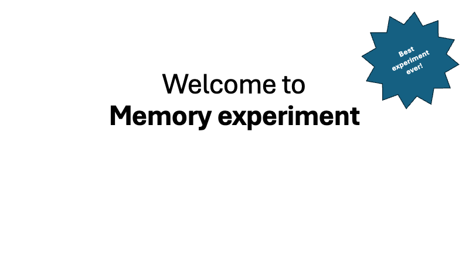
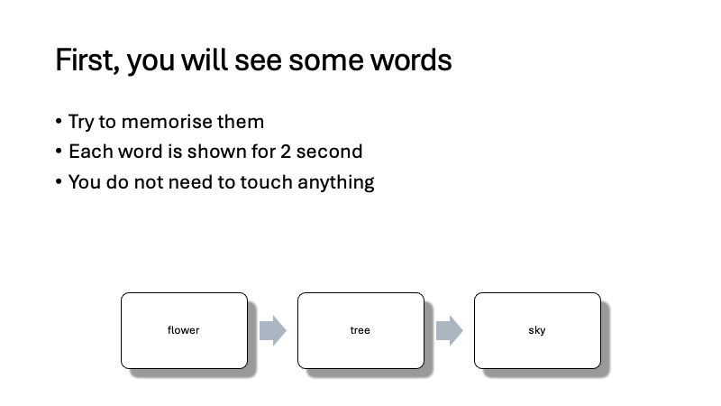
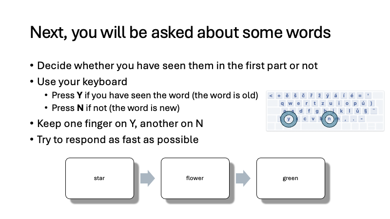

<!DOCTYPE html>
<html>
  <head>
    <title>My experiment</title>
    <script src="jatos.js"></script>
    <script src="jspsych/dist/jspsych.js"></script>
    <script src="jspsych/dist/plugin-html-keyboard-response.js"></script>
    <script src="jspsych/dist/plugin-instructions.js"></script>
    <script src="jspsych/dist/plugin-preload.js"></script>
    <link href="jspsych/dist/jspsych.css" rel="stylesheet" type="text/css" />
  </head>
  <body></body>
  <script>
    // new variables
    var runOnServer = (typeof jatos !== 'undefined');
    var jsPsych;

    // previous code wrapped in a new function
    function prepareTimeline() {

    const instructions = {
      type: jsPsychInstructions,
      pages: [
        '',
        '',
        '',
        '',
      ],
      show_clickable_nav: true
    }

    const test_block_announcement = {
      type: jsPsychInstructions,
      pages: [
        '',
      ],
      show_clickable_nav: true
    }

    const bye = {
      type: jsPsychHtmlKeyboardResponse,
      stimulus: '',
    }

    const show_word = {
      type: jsPsychHtmlKeyboardResponse,
      trial_duration: 2000,
      choices: "NO_KEYS",
      stimulus: 
        () => `<p style="font-size:48px;">${jsPsych.timelineVariable('word')}</p>`,
    }

    const test_word = {
      type: jsPsychHtmlKeyboardResponse,
      trial_duration: null,
      choices: ["y", "n"],
      stimulus: 
        () => `<p style="font-size:48px;">${jsPsych.timelineVariable('word')}</p>`,
      prompt: "<br/><br/>Have you seen this word before? (y/n)",
      on_finish: function(data){
        if(jsPsych.pluginAPI.compareKeys(data.response, jsPsych.timelineVariable('expected'))){
          data.correct = true;
        } else {
          data.correct = false; 
        }
      }
    }

    const feedback = {
      type: jsPsychHtmlKeyboardResponse,
      trial_duration: 1000,
      choices: "NO_KEYS",
      stimulus: () => {
        var last_trial_correct = jsPsych.data.get().last(1).values()[0].correct;
        if(last_trial_correct){
          return "<p>Correct!</p>"; 
        } else {
          return "<p>Wrong.</p>"; 
        }
      },
    }

    // your data
    const stimuli = ["dog", ];
    const distractors = ["cat", ];
    // making dictionaries
    const learning_vars = stimuli.map((x) => ({word: x}));
    const together = [...stimuli, ...distractors];
    const testing_vars = 
      together.map((x) => ({
        word: x, 
        expected: stimuli.includes(x) ? "y" : "n",
    }))

    learning_part = {
        timeline: [show_word],
        timeline_variables: [
            {word: "dog", },
        ],
    }

    testing_part = {
        timeline: [test_word, feedback],
        timeline_variables: [
            {word: "dog", expected: "y", },
            {word: "cat", expected: "n", },
        ],
        randomize_order: true,
    }

    const timeline = [
        instructions, 
        learning_part,
        test_block_announcement,
        testing_part,
        bye,
    ];
    return timeline;
    }

    // code for hybrid running (with/without JATOS)
    var runExperiment = () => { 
        jsPsych = initJsPsych({
            on_finish: function() {
                var resultJson = jsPsych.data.get().json();
                if (runOnServer) {
                    jatos.submitResultData(resultJson, jatos.startNextComponent);
                } else {
                    jsPsych.data.get().localSave('json', "results.json"); 
                }
            }
        }); 
        var timeline = prepareTimeline();
        // console.log(timeline);
        jsPsych.run(timeline);
    };

    // start the experiment via JATOS or directly 
    if (runOnServer) {
        jatos.onLoad(function() { runExperiment(); });
    } else {
        runExperiment();
    }

  </script>
</html>
